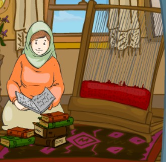

Anadolu'da Kilim - Okuma Metni
Bindallı'nın Hikayesi Bulgaristan Devrialem TRT Avaz
Türkülerimiz ve Halk Çalgılarımız
Ebru Sanatı
Kilim Desenleri
Kültürel Ögeler Değişir mi?
Türk İğnesinin Mucizesi Bohça Markası Tanıtım Videosu